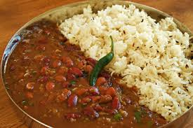

Ingredients
- 1 cup rajma (red kidney beans), soaked overnight
- 3 cups water (for pressure cooking rajma)
- 3 tablespoons oil or ghee
- 1 teaspoon cumin seeds (jeera)
- 1 large onion, finely chopped
- 2 teaspoons ginger-garlic paste
- 2 large tomatoes, pureed
- 2 green chilies, slit
- 1 teaspoon turmeric powder
- 2 teaspoons red chili powder
- 1 tablespoon coriander powder
- 1 teaspoon garam masala
- 1 teaspoon dried fenugreek leaves (kasuri methi), crushed
- Salt to taste
- Fresh coriander leaves, chopped (for garnish)
- 4 cups cooked basmati rice
- 1 tablespoon butter (optional, for rice)
Instructions
- Cook soaked rajma until soft; keep cooking liquid.
- Saute cumin and onions, then ginger-garlic and tomato puree.
- Add spices and simmer; add rajma with water and cook 15-20 min.
- Finish with garam masala, kasuri methi, and fresh coriander.
- Serve with steamed basmati rice.
Chef's Tips
Pro Tip 1: Soak rajma at least 8 hours or overnight; this softens beans and reduces cook time.
Pro Tip 2: Let rajma simmer slowly after pressure cooking to deepen flavor and thicken gravy.
Pro Tip 3: Add a small piece of jaggery or a pinch of sugar while simmering for balanced taste.